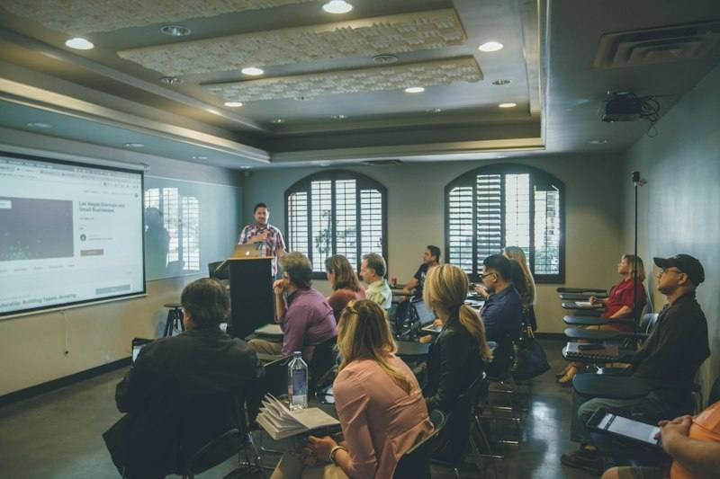

Ana sayfa / Kariyer
Kariyer
Bir bölüm seçin: ne okunduğunu, birinci yılda hangi derslerin olduğunu, ülkelere göre süreyi, istenen sınavları ve mezunların neler yaptığını görün.
251 bölüm
Sağlık
TıpMedicineDiş HekimliğiDentistryEczacılıkPharmacyVeteriner HekimlikVeterinary Medicine / Veterinary ScienceHemşirelikNursingBiyomedikal BilimlerBiomedical SciencesDil ve Konuşma TerapisiSpeech and Language TherapyEbelikMidwiferyHalk SağlığıPublic HealthBeslenme ve DiyetetikNutrition and DieteticsFizyoterapiPhysiotherapyErgoterapiOccupational TherapyFarmakolojiPharmacologyOdyolojiAudiologyOptometriOptometrySağlık YönetimiHealthcare ManagementParamedik ve Acil BakımParamedic ScienceRadyografiRadiographyTıbbi Laboratuvar BilimleriBiomedical Laboratory ScienceKlinik PsikolojiClinical PsychologySpor Hekimliği ve Egzersiz FizyolojisiSport and Exercise ScienceDiş Protez TeknolojisiDental TechnologyTıbbi Görüntüleme ve Yapay ZekâMedical ImagingGenetik DanışmanlıkGenetic CounsellingKüresel SağlıkGlobal HealthDijital SağlıkDigital Health
Mühendislik ve teknoloji
Bilgisayar MühendisliğiComputer Engineering / Computer ScienceYazılım MühendisliğiSoftware EngineeringVeri BilimiData ScienceYapay ZekâArtificial IntelligenceElektrik ve Elektronik MühendisliğiElectrical and Electronic EngineeringMakine MühendisliğiMechanical Engineeringİnşaat MühendisliğiCivil EngineeringEndüstri MühendisliğiIndustrial EngineeringKimya MühendisliğiChemical EngineeringBiyomedikal MühendisliğiBiomedical EngineeringHavacılık ve Uzay MühendisliğiAerospace EngineeringBilgisayar BilimiComputer ScienceYönetim Bilişim SistemleriManagement Information Systemsİş AnalitiğiBusiness AnalyticsBilgi TeknolojileriInformation TechnologyMekatronik MühendisliğiMechatronics EngineeringBiyomühendislikBioengineeringEnerji Sistemleri MühendisliğiEnergy EngineeringGıda MühendisliğiFood EngineeringMalzeme Bilimi ve MühendisliğiMaterials Science and EngineeringOtomotiv MühendisliğiAutomotive EngineeringÇevre MühendisliğiEnvironmental EngineeringYapı ve Proje YönetimiConstruction ManagementSiber GüvenlikCyber SecurityRobotikRoboticsİstatistikStatisticsMatematik ve Bilgisayar BilimiMathematics and Computer ScienceAktüerya BilimiActuarial ScienceMühendislik YönetimiEngineering ManagementHesaplamalı DilbilimComputational LinguisticsDrone ve İHA TeknolojileriDrone TechnologyGemi İnşaatı ve Deniz MühendisliğiNaval Architecture and Marine EngineeringMaden MühendisliğiMining EngineeringPetrol ve Doğal Gaz MühendisliğiPetroleum EngineeringJeoloji MühendisliğiGeological EngineeringNükleer MühendislikNuclear EngineeringTelekomünikasyon MühendisliğiTelecommunications EngineeringKontrol ve Otomasyon MühendisliğiControl and Automation EngineeringElektrikli Araç MühendisliğiElectric Vehicle EngineeringSürdürülebilir EnerjiSustainable EnergyNanoteknolojiNanotechnologyOyun ProgramlamaGames ProgrammingBulut ve Ağ SistemleriNetwork and Cloud ComputingYazılım ve Web GeliştirmeWeb Developmentİnsan Bilgisayar EtkileşimiHuman Computer InteractionTekstil MühendisliğiTextile EngineeringSes ve Oyun Sesi TasarımıGame AudioHarita ve Geomatik MühendisliğiGeomatics EngineeringKuantum TeknolojileriQuantum TechnologiesKuantum BilişimQuantum ComputingSanal ve Artırılmış GerçeklikVirtual and Augmented RealityBlokzincir ve Dijital VarlıklarBlockchainOkyanus MühendisliğiOcean EngineeringHidrojen ve Yakıt TeknolojileriHydrogen Technology
İşletme ve ekonomi
İşletmeBusiness Management / Business AdministrationEkonomiEconomicsFinansFinanceMuhasebeAccountingPazarlamaMarketingİnsan Kaynakları YönetimiHuman Resource ManagementLojistik ve Tedarik Zinciri YönetimiLogistics and Supply Chain ManagementTurizm ve Otel İşletmeciliğiHospitality and Tourism ManagementUluslararası İşletmeInternational BusinessEkonometriEconometricsGirişimcilikEntrepreneurshipGayrimenkulReal EstateLüks Marka YönetimiLuxury Brand ManagementModa İşletmeciliğiFashion ManagementSanat YönetimiArts ManagementDavranışsal EkonomiBehavioural EconomicsDijital PazarlamaDigital MarketingSürdürülebilir İşletmeSustainable BusinessDöngüsel EkonomiCircular EconomyBankacılıkBankingPerakende YönetimiRetail ManagementProje YönetimiProject Managementİşletme Yönetimi (MBA)Master of Business AdministrationYönetim ve OrganizasyonManagementEnerji Ekonomisi ve YönetimiEnergy ManagementKamu YönetimiPublic AdministrationSigortacılık ve Risk YönetimiRisk ManagementFintechFinancial TechnologyMüzik İşletmeciliğiMusic BusinessUluslararası TicaretInternational Trade
Hukuk ve sosyal bilimler
HukukLawPsikolojiPsychologyUluslararası İlişkilerInternational RelationsSiyaset BilimiPolitics / Political ScienceSosyolojiSociologyİletişim ve MedyaCommunication and Media StudiesTarihHistoryFelsefePhilosophyEğitim BilimleriEducationDilbilim ve DillerLinguistics and Modern LanguagesDijital MedyaDigital MediaLiberal ArtsLiberal Artsİngiliz Dili ve EdebiyatıEnglish Language and LiteratureSanat TarihiArt HistoryArkeolojiArchaeologyDin BilimleriReligious StudiesKültürel ÇalışmalarCultural StudiesBilişsel BilimlerCognitive ScienceFelsefe, Siyaset ve Ekonomi (PPE)Philosophy, Politics and EconomicsGazetecilikJournalismKalkınma ÇalışmalarıDevelopment StudiesKarşılaştırmalı EdebiyatComparative LiteratureAntropolojiAnthropologyAvrupa ÇalışmalarıEuropean StudiesDoğu Asya ÇalışmalarıEast Asian StudiesKriminolojiCriminologyHalkla İlişkilerPublic RelationsReklamcılıkAdvertisingYaratıcı YazarlıkCreative WritingModern DillerModern LanguagesOrta Doğu ÇalışmalarıMiddle Eastern Studiesİçerik Üretimi ve Sosyal MedyaContent Creation and Social MediaSosyal HizmetSocial WorkToplumsal Cinsiyet ÇalışmalarıGender StudiesMüzecilik ve Kültürel MirasMuseum and Heritage StudiesTicaret HukukuBusiness LawDiplomasiDiplomacyGüvenlik ÇalışmalarıSecurity StudiesKamu PolitikasıPublic PolicyYayıncılıkPublishingFotoğrafçılıkPhotographyRadyo ve Podcast YapımıAudio and Radio ProductionSpor MedyasıSports MediaSiyasal İletişimPolitical CommunicationOkul Öncesi EğitimiEarly Childhood EducationMütercim TercümanlıkTranslation and InterpretingÖzel EğitimSpecial EducationYabancı Dil Olarak İngilizce Öğretimi (TESOL)TESOLEğitim YönetimiEducational LeadershipUluslararası HukukInternational Lawİnsan HaklarıHuman RightsVeri GazeteciliğiData JournalismYapay Zekâ Etiği ve PolitikasıAI Ethics and PolicySosyal İnovasyonSocial InnovationUzay Hukuku ve PolitikasıSpace Law and Policy
Tasarım ve sanat
MimarlıkArchitectureİç MimarlıkInterior Architecture / Interior DesignŞehir ve Bölge PlanlamaUrban and Regional PlanningGrafik TasarımGraphic DesignModa TasarımıFashion DesignEndüstriyel TasarımIndustrial Design / Product DesignSinema ve TelevizyonFilm and Television Production / Film StudiesMüzikMusicGüzel SanatlarFine ArtTiyatro ve Sahne SanatlarıTheatre and PerformanceAnimasyonAnimationPeyzaj MimarlığıLandscape ArchitectureİllüstrasyonIllustrationÜrün TasarımıProduct DesignKompozisyonCompositionSahne TasarımıTheatre DesignKostüm TasarımıCostume DesignOyunculukActingMüzik Teknolojisi ve Ses TasarımıMusic TechnologyOpera ve ŞanVocal PerformanceUX TasarımıUser Experience DesignOyun TasarımıGame Designİletişim TasarımıCommunication DesignGörsel İletişimVisual CommunicationTakı TasarımıJewellery DesignTekstil TasarımıTextile DesignKentsel TasarımUrban DesignMobilya TasarımıFurniture DesignDansDanceMüzik ProdüksiyonuMusic ProductionGörsel Efekt (VFX)Visual EffectsSenaryo YazarlığıScreenwritingMüzikal TiyatroMusical TheatreSürdürülebilir ModaSustainable FashionAkıllı ŞehirlerSmart CitiesYapay Zekâ ve YaratıcılıkAI and CreativityYaratıcı TeknolojilerCreative TechnologyBiyotasarımBiodesign
Doğa bilimleri
BiyolojiBiology / Biological SciencesKimyaChemistryFizikPhysicsMatematikMathematicsÇevre Bilimleri ve SürdürülebilirlikEnvironmental Science / Environmental SciencesBiyoteknolojiBiotechnologyJeoloji ve Yer BilimleriGeology and Earth SciencesAstrofizikAstrophysicsCoğrafyaGeographyZiraat MühendisliğiAgricultural ScienceBiyokimyaBiochemistryMoleküler Biyoloji ve GenetikMolecular Biology and GeneticsSinirbilimNeuroscienceZoolojiZoologyDeniz BilimleriMarine ScienceDoğa Bilimleri (Natural Sciences)Natural SciencesEkolojiEcologyMikrobiyolojiMicrobiologyHayvan BilimiAnimal Scienceİklim BilimiClimate ScienceMeteorolojiMeteorologyAdli BilimlerForensic ScienceFarmasötik BilimlerPharmaceutical ScienceUzay BilimleriSpace ScienceGıda Bilimi ve TeknolojisiFood Science and TechnologyGıda Teknolojisi ve İnovasyonFood InnovationOrmancılıkForestryBahçe BitkileriHorticultureSu ÜrünleriAquacultureDoğa KorumaConservationTarım İşletmeciliğiAgribusinessBiyoinformatikBioinformaticsBağcılık ve ŞarapçılıkViticulture and Oenology
Spor ve mutfak
Spor BilimleriSport and Exercise ScienceGastronomi ve Mutfak SanatlarıCulinary Arts / GastronomyE-Spor YönetimiEsports ManagementEtkinlik YönetimiEvent ManagementPilotajCommercial Pilot TrainingPastacılıkPastry ArtsKruvaziyer ve Denizcilik TurizmiMaritime StudiesSpor YönetimiSport ManagementAntrenörlükSports CoachingBeden Eğitimi ÖğretmenliğiPhysical EducationSpor PsikolojisiSport PsychologySpor PazarlamasıSport MarketingRekreasyonRecreation ManagementHavacılık YönetimiAviation ManagementŞarap ve İçecek YönetimiWine Business
KARARSIZ MISINIZ?
Teste başlayın Benim Yerim testiyle başlayın
Kişilik tipinize göre size uygun bölümleri, ülkeleri ve doğrulanmış İngilizce programları listeleyen ücretsiz test.

Hangi bölüm size göre?
İlgi alanlarını, güçlü dersleri ve hedefleri konuşup bölüm ve ülke seçeneklerini birlikte daraltalım.